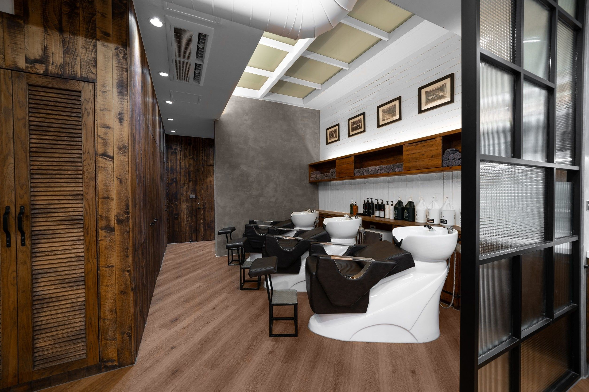

Hair Science Classroom
美髮理科小教室把專業說成你聽得懂的話
由 Jay 杰煬主理，從染燙護、頭皮健康、白髮設計到居家整理，協助顧客在預約前理解自己的髮況與選擇。
Featured Videos
最新美髮理科影片
用短影音快速理解頭皮、染髮、燙髮、服務模式與居家整理迷思。看完仍不確定，也可以預約時讓設計師協助判斷。
Before Service
預約前也可以先做功課。
如果你不確定自己適合染、燙、護或頭皮管理，歡迎先把問題傳給 ALICE。設計師會用髮況與需求協助判斷。

我不知道自己的髮況適合哪種服務，可以先問嗎？
可以。請透過 LINE 傳髮況照片、過去染燙紀錄與想改善的問題，設計師會協助初步判斷。
美髮理科的內容可以取代現場諮詢嗎？
文章能協助理解方向，但實際服務仍需依現場髮質、頭皮與設計需求判斷。